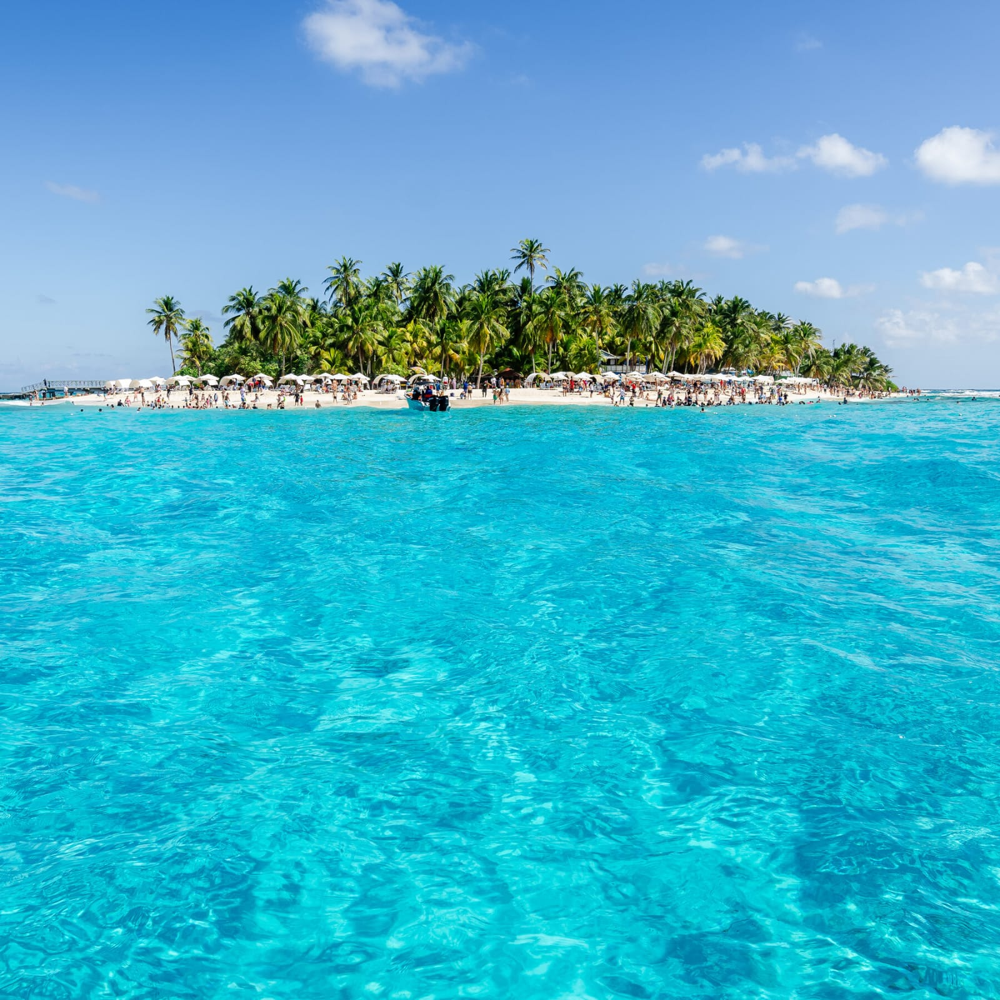
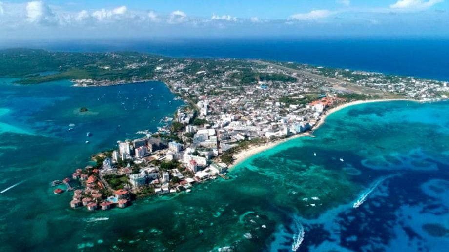

Disfrutar las playas
Relájate y disfruta de las hermosas playas de la isla.

San Andrés es una isla colombiana ubicada en el mar Caribe. Es conocida por sus hermosas playas, sus aguas cristalinas y sus diferentes tonalidades de azul.
La isla combina paisajes naturales, cultura caribeña y actividades acuáticas, convirtiéndola en uno de los destinos turísticos más conocidos de Colombia.

Mar Caribe
Playas de arena y aguas cristalinas
Aguas de diferentes tonalidades
Gran variedad de especies
Relájate y disfruta de las hermosas playas de la isla.
Descubre la vida marina y los colores de sus aguas.
Captura los increíbles paisajes y atardeceres de la isla.
San Andrés combina playas paradisíacas, aguas cristalinas, naturaleza y cultura caribeña. Es un destino ideal para disfrutar del mar, descubrir nuevos paisajes y vivir una experiencia diferente en Colombia.